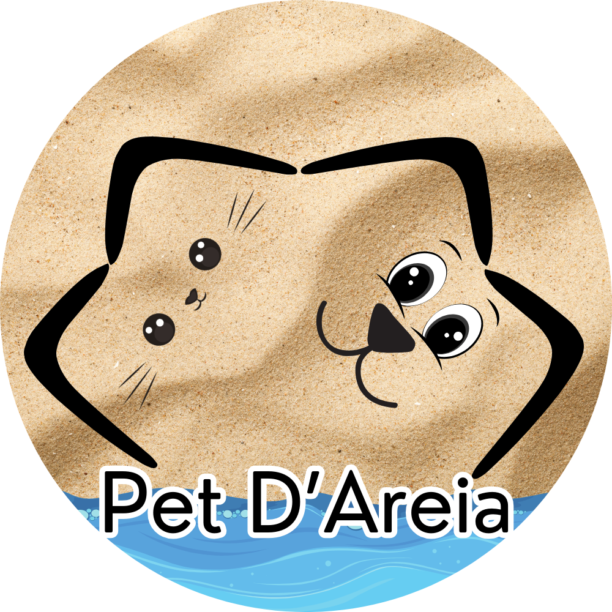

Nossa Missão
Resgatar, cuidar e amar.


Resgatar, cuidar e amar.
Estes anjos estão esperando por um lar cheio de amor.
Histórias reais de quem adotou e transformou vidas.
Animais que já encontraram sua família eterna.
Compre produtos e reverta 100% do lucro para os animais.
Qualquer valor ajuda a alimentar e medicar nossos resgatados.
Dúvidas sobre adoção ou como ajudar? Fale com a gente!